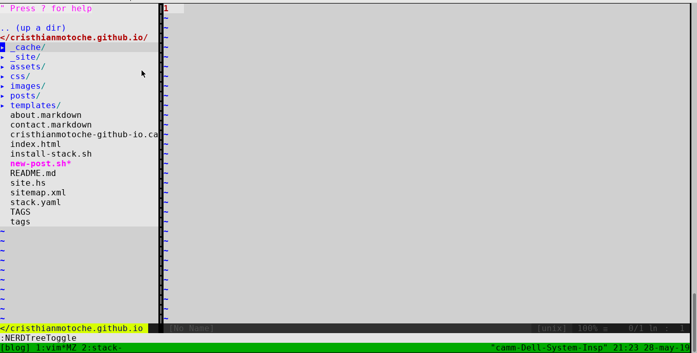

Steps to create a new post. What a bummer!
Currently, this is the process I follow to create a new post:

Yeah, I know, the dates are wrong and I just fixed that, but that’s not the worst part. The worst part is that I have to do this each time I want to create a new post. That’s a bummer! I must automate this!
I’m using hakyll to generate static pages for this blog post.
This tool provides a set of functions to run the hakyll compiler.
The hakyll function takes a set of rules and it’s ready to go:
main :: IO ()
main = hakyll rulesHowever, hakyll provides a CLI with a predefined set of commands:
$ stack exec site
Missing: COMMAND
Usage: site [-v|--verbose] COMMAND
site - Static site compiler created with Hakyll
Available options:
-h,--help Show this help text
-v,--verbose Run in verbose mode
Available commands:
build Generate the site
check Validate the site output
clean Clean up and remove cache
deploy Upload/deploy your site
preview [DEPRECATED] Please use the watch command
rebuild Clean and build again
server Start a preview server
watch Autocompile on changes and start a preview server.
You can watch and recompile without running a serverAll of those commands are useful, but I’d love to extend the commands with a new one that starts a new post, something like:
$ stack exec site new-post 'Post name'
POST GENERATED: posts/2019-05-28-Post-name.mdAnd that’s the goal of this post!
Approach #1
My first approach was to extend the commands from hakyll, but it seems it’s
not currently possible. So, I decided to try optparse-applicative
and create a command line interface (CLI) on my own. However, I would have had
to rewrite a lot of code for the hakyll commands. So, I decided to add a
new command and then use the rest of hakyll commands:
data Opts = New String deriving ShowNow, let’s define a Parser:
parser :: Parser Opts
parser =
New <$>
subparser
(command "new" (info (option str (long "name")) (progDesc "New post")))Unfortunately, execParser or customExecParser from
optparse-applicative use handleParseResult
that exits when the command is not in parsed. I don’t want to exit
on failure, because on failure I want to attempt hakyll commands. Fortunately,
optparse-applicative provides execParsePure that allows me
to handle the parser result as I want. In this case, I attempted this:
main :: IO ()
main = do
args <- getArgs
let parseResult =
execParserPure
(prefs showHelpOnError)
(info (helper <*> parser) fullDesc)
args
case parseResult of
Success (New name) -> mkNewPost name >>= createNewPost
Failure failure -> do
progname <- getProgName
let (msg, _) = renderFailure failure progname
putStrLn "# CUSTOM COMMANDS"
hPutStrLn stderr msg
putStrLn "\n# HAKYLL COMMANDS"
hakyll rules
completionInvoke -> void $ handleParseResult completionInvokeexecParserPure returns a ParserResult and I simply pattern matched it.
If the parsing is successful and parses New name it creates a new post and
creates a basic templace with the current date and a given name.
If it fails, it renders the parsing failure, prints some messages to separate the
results from my custom commands and the ones from hakyll,
redirects the parsing error to stderr, and then executes any hakyll command.
Finally, if the parser result is Completition, I delegate handleParseResult
to take care of that, because I don’t know what to do with that.
Now the results:
$ stack exec site
# CUSTOM COMMANDS
Missing: COMMAND
Usage: site COMMAND
Available options:
-h,--help Show this help text
Available commands:
new New post
# HAKYLL COMMANDS
Missing: COMMAND
Usage: site [-v|--verbose] COMMAND
site - Static site compiler created with Hakyll
Available options:
-h,--help Show this help text
-v,--verbose Run in verbose mode
Available commands:
build Generate the site
check Validate the site output
...Nice! Now, I can do this:
$ stack exec site new --name "some post"
$ ls posts/
...
2019-06-06-some-post.mdAnd if you want to execute the hakyll commands:
$ stack exec site watch
CUSTOM COMMANDS
Invalid argument `watch'
Usage: site COMMAND
Available options:
-h,--help Show this help text
Available commands:
new New post
HAKYLL COMMANDS
Listening on http://127.0.0.1:8000
Initialising...
Creating store...
Creating provider...
Running rules...
Checking for out-of-date items
Compiling
SuccessYou are probably thinking: Pfff! That’s gonna print the failure of your parser dummy! That’s terrible -_-
I’m probably going to say: Definatelly, I agree with you. I’m going to look for a better approach but for now that will work.
Thanks for reading.
ByE!